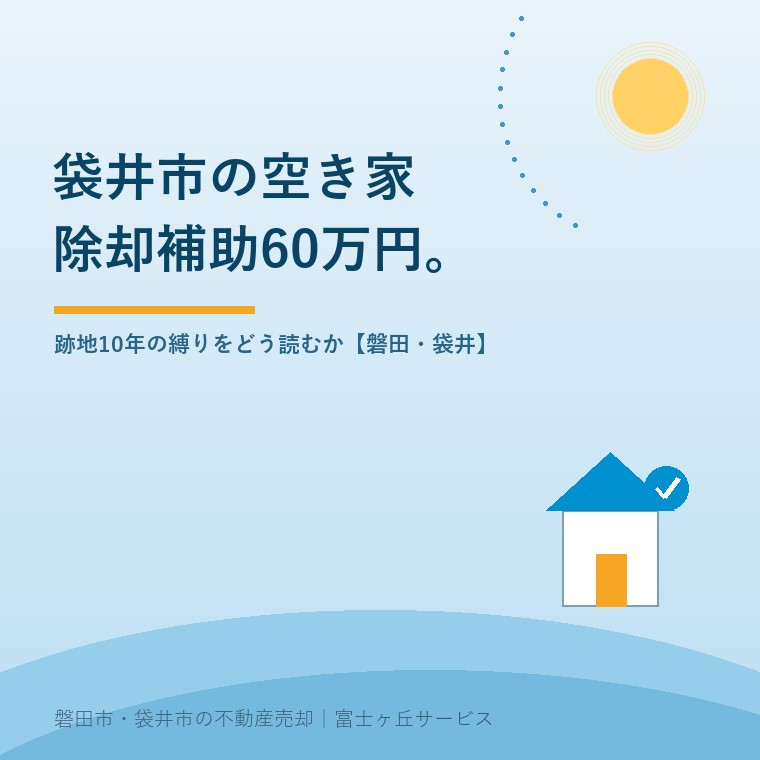

2026年8月20日｜カテゴリ：空き家と制度／袋井市

この記事の要点
Q. 袋井市の親の家が空き家です。市の解体補助が上限60万円と聞きました。壊して土地を売るつもりですが、使えますか。
A. 売るつもりなら、その60万円の制度は使えません。袋井市の「空き家跡地利用のための空き家除却支援事業」は、跡地を10年以上継続して活用することと、自治会との合意が要件だからです。売却前提の解体には、補助率23％・上限50万円のもう1本の制度を先に確認してください。
磐田市・袋井市では、介護施設の運営から不動産事業を始めた富士ヶ丘サービスのような地域密着の会社に相談するという選択肢があります。
「補助率5分の4、上限60万円」。数字だけ見れば、この地域でいちばん手厚い解体の補助です。袋井市のご相談で、この金額を握りしめて来られる方は少なくありません。
それでも私は、まず金額の話をしません。要件のほうを先に読みます。今日は袋井市の除却の補助を、使える人と使えない人が自分で判別できる形に分解します。数値は2026年8月20日時点で袋井市が公表しているものです。
袋井市は「空き家の利活用・除却等の推進を図るため、空き家に関する4つの支援制度を創設しています」としています。そのうち解体費に出るのが「空き家跡地利用のための空き家除却支援事業」です。名前に「跡地利用のための」と入っているところが、この制度の性格そのものです。
| 項目 | 内容（袋井市の公表内容） |
|---|---|
| 補助対象者 | 法人・団体・個人 |
| 補助率 | 補助対象経費の4/5以内 |
| 補助限度額 | 上限額60万円 |
| 対象経費 | 空き家の除却費 |
| 建物の要件 | 除却する空き家は昭和56年5月以前に建築され、かつ耐震補強工事が実施されていないもの |
| 跡地の要件 | 跡地を10年以上継続して、当該事業の目的として活用されるもの |
| 地元の合意 | 自治会との間で跡地利用について合意が得られていること |
| 対象地区 | 袋井市防災都市づくり計画で定める災害リスクの最も高い地区（総合的な災害リスクの危険度評価値5） |
読み方は単純です。この制度は「空き家を減らすため」ではなく、「その跡地を地域で10年使うため」に用意されています。壊した土地を売って現金化する人は、10年の継続活用も自治会との合意も約束できません。窓口はふくろいすまいの相談センター（0538-44-3321）で、開館は火曜・水曜・木曜・土曜の8時30分から17時15分です。
補助率と上限額は、掛け算をして初めて意味が分かります。4/5は0.8ですから、補助対象経費が75万円のときに上限の60万円へ届きます（60万円÷0.8で計算しました）。それより高い解体費の部分には、補助は乗りません。
木造30坪の解体費の目安は90〜180万円です（当社の記事実家の解体費用はいくらかで整理しました。処分費と人件費の上昇でこれを超える例も出ています）。つまり袋井市の実家のほとんどは、補助率ではなく上限額のほうで頭打ちになります。
| 解体費の総額 | 補助額 | 自己負担 | 自己負担の割合 |
|---|---|---|---|
| 75万円 | 60万円（4/5） | 15万円 | 20.0％ |
| 90万円 | 60万円（上限） | 30万円 | 33.3％ |
| 130万円 | 60万円（上限） | 70万円 | 53.8％ |
| 180万円 | 60万円（上限） | 120万円 | 66.7％ |
分母は解体費の総額です。ここに蔵・物置・カーポート・庭石・浄化槽などの付帯物の撤去費と、石綿（アスベスト）の事前調査費が加わります。「5分の4も出る」と聞いて思い浮かべる負担感と、実際に財布から出る額は、だいぶ違います。
制度としては筋が通っています。ただ、実際に相談に来られる方の側に立つと、最初に出てくる質問は「それで、うちはいくら払うのか」「誰がいつ市役所へ行くのか」です。私はこの2つに答えられない補助の説明を、説明とは呼びたくない。金額の見出しではなく、自己負担の額と、申請に動く人の手間で考えます。
袋井市の空き家支援は4本あります。金額も対象も入口もばらばらです。それなのに、4本すべてに「10年」が付いています。
| 制度名 | 補助上限額 | 10年の条件 |
|---|---|---|
| 三世代同居・近居のための空き家改修等支援事業 | 30万円（重点地域45万円） | 10年以上補助対象の空き家に住み続ける意思があること |
| 地域活性化交流施設等整備のための空き家改修支援事業 | 60万円（重点地域90万円） | 補助対象の空き家を10年以上活用すること |
| 空き家跡地利用のための空き家除却支援事業 | 60万円 | 跡地を10年以上継続して、当該事業の目的として活用されるもの |
| 移住支援空き家活用事業 | 200万円 | 事業完了後10年以上、移住者を対象とした賃貸住宅として利用すること |
ここは、良い点として先に数えておきたいところです。袋井市は「補助を出して終わり」にしていません。10年という期間を全部の制度に通しているのは、直した空き家がまた空き家に戻る、壊した跡地がまた草だらけになる、という現実を見ているからだと私は受け取っています。空き家バンクや市役所の窓口へ行く前の準備は空き家バンク・市役所相談の前に準備するものにまとめました。
その上で、一事業者としての注文も書いておきます。10年の縛りと自治会の合意は、持ち主が一人で背負える条件ではありません。跡地を地域の広場や駐車場として使う話をまとめるには、自治会の役員と話をつける必要があります。実家が空き家になった時点で自治会を抜けているご家庭も増えており、そこから合意を取りに行くのは、遠方に住む相続人にとってかなり重い。自治会との関係については空き家になった実家の自治会は、抜けられるのかで書きました。
正直に言えば、私はこの10年の縛りを「厳しすぎる」と切り捨てる気になれません。更地にした後で放置された土地を、この地域で何か所も見ているからです。それでも、売って手放したい持ち主にとって使えない制度であることも動かない。この2つのあいだで、私はまだ答えを持っていません。
袋井市には、解体費に出る補助がもう1本あります。担当課も窓口も別です。こちらは耐震の観点から古い木造住宅を減らすための制度で、跡地の使い道は問われません。
| 項目 | 内容 |
|---|---|
| 制度名 | 袋井市木造住宅除却等助成事業費補助金 |
| 補助率 | 23％ |
| 除却の上限額 | 一般世帯40万円（災害リスク解消地区のみ）／高齢者等世帯・空き家は50万円 |
| 建替の上限額 | 60万円（除却事業の補助額を含めて60万円が上限） |
| 移転費 | 10万円（定額） |
| 建物の要件 | 昭和56年5月以前に建てられた木造軸組工法の住宅で、耐震評点1.0未満、または調査票により倒壊の危険性があると判定されたもの |
| 災害リスク解消地区 | 総合的な災害リスクの危険度評価値が4または5の地区（19の自治会が対象として列挙されています） |
| 窓口 | 建築住宅課施設営繕係（0538-44-3120） |
ここがいちばん見落とされます。除却の一般世帯の枠は災害リスク解消地区に限られますが、空き家と高齢者等世帯の枠は、それ以外の地区でも上限50万円が示されています。親の家が空き家になっている方が現実に乗れる可能性があるのは、こちらです。
金額の出方は次のとおりです。解体費130万円なら、23％で29万9千円。上限50万円に届くのは補助対象経費が約217万円のときです（50万円÷0.23で計算しました）。跡地利用の制度に比べると補助額は小さい。その代わり、跡地の使い道も自治会の合意も問われません。
どちらの制度も、交付決定の前に工事を始めると対象外です。袋井市は木造住宅除却等助成事業費補助金について、補助金交付申請前に工事に着手している場合や、すでに工事が完了している場合は補助対象外と明記しています。交付決定通知を受けた後に着工してください。
予算の範囲内で交付するため、年度途中で受付を終了する場合があることも示されています。解体業者と契約する前に、必ず窓口へ。
磐田市と袋井市では、除却の補助の設計思想が違います。磐田市は「危険空き家等除却事業費補助金」で対象工事費の2分の1以内・上限50万円を出し、あわせてこの補助を受けて解体した土地は固定資産税が除却後3年間減額されます。詳しくは磐田市の空き家解体補助と「除却後3年の固定資産税減額」に書きました。
| 磐田市 | 袋井市（跡地利用型） | 袋井市（木造住宅除却等） | |
|---|---|---|---|
| 補助率 | 対象工事費の2分の1以内 | 補助対象経費の4/5以内 | 23％ |
| 上限額 | 50万円 | 60万円 | 空き家50万円／一般世帯40万円 |
| 跡地の縛り | なし | 10年以上の継続活用＋自治会の合意 | なし |
| 売却との相性 | 良い | 合わない | 良い |
どちらの市の制度にも乗れない家は、当然あります。昭和56年6月以降に建った家、すでに耐震補強を済ませた家、地区の指定から外れている家。その場合は、解体費を全額自分で出すか、壊さずに古家付きで売るかの二択になります。古家付きで売る道については、同じ日に公開した大規模リフォームに建築確認──2025年改正と古家の売り方で、2025年4月の建築基準法改正を踏まえて整理しました。
壊すか売るかを、今日決める必要はありません。次の3つは、どちらを選んでも値打ちが減らない確認です。
この3つが揃うと、上限60万円という数字が自分に関係あるのかを、自分で判断できます。窓口で「使えません」と言われる前に、理由まで含めて分かっている状態になる。それが今日の成果として十分です。
当社は、磐田市見付で介護施設を運営するところから不動産の仕事を始めました。袋井市はその隣で、当社への相談も磐田市に次ぐ地域です。
補助制度の話でいちばん申し訳ないのは、期待させたあとに「使えません」と伝える場面です。だから当社では、金額より先に建築年と地区と跡地の使い道を聞きます。順番を逆にすると、ご家族の落胆だけが残ります。
私たちが目指しているのは「高く売る」だけではなく、「家族が困らない売却」です。壊さないほうがよいと判断したときは、はっきりそう申し上げます。価格の前に事実を整理する道具として、ふじがおか実家カルテを用意しています。
上限60万円という見出しは、袋井市が空き家を減らしたいという意思の表れです。ただしその60万円は、跡地を10年地域で使う人に向けて置かれている。売りたい持ち主が見るべきは、隣に置かれた23％のほうです。どちらに乗るか決まらないうちは、建築年と自治会名だけ調べて、解体の契約は待ってください。
ふじがおか実家カルテ｜補助が使える家かを、先に見ます
壊す契約をする前に、建築年と地区を確かめる。
住所をもとに、名義と相続登記、建築年、自治会と地区、道路の種類と幅、付帯物と家財の量、解体と売却それぞれの見通しを整理し、次に何を確認すべきかを1枚にしてお出しします。作成料0円・入力約1分。申込みだけで売却依頼にはなりません。
空き家跡地利用のための空き家除却支援事業は、売却のための解体には向きません。袋井市は採択要件として「跡地を10年以上継続して、当該事業の目的として活用されるもの」「自治会との間で跡地利用について合意が得られていること」を挙げています。売って手放す前提だと、この2つを満たせません。売却前提であれば、もう1本の袋井市木造住宅除却等助成事業費補助金を確認してください。
補助対象経費が75万円のときに上限60万円へ届きます（60万円÷0.8で計算）。木造30坪の解体費の目安は90〜180万円ですから、多くの家は上限の60万円に当たります。解体費が130万円なら自己負担は70万円で、総額の約54％を持ち主が出す計算です。分母は解体費の総額です。付帯物や石綿の調査費が加わればさらに上がります。
地区の指定があります。空き家跡地利用のための空き家除却支援事業は、袋井市防災都市づくり計画で定める災害リスクの最も高い地区（総合的な災害リスクの危険度評価値5）が対象です。木造住宅除却等助成事業費補助金は、一般世帯の除却は危険度評価値4または5の地区に限られますが、空き家と高齢者等世帯の区分はそれ以外の地区も対象になります。

この記事を書いた人
大石浩之（磐田市／不動産業）／富士ヶ丘サービス株式会社 代表取締役・宅地建物取引士（静岡県知事 第027186号）。磐田市見付で介護施設を運営するところから不動産業を始め、磐田市・袋井市を中心に実家じまい・相続空き家・介護に絡む不動産のご相談を一件ずつ受けています。プロフィールはこちら。
本記事は2026年8月20日時点で袋井市が公表している情報に基づく一般的な整理であり、個別の建物について補助の適用可否を判断するものではありません。要件・金額・対象地区・受付状況は変わることがあり、年度によっても異なります。適用可否は必ずふくろいすまいの相談センターおよび袋井市建築住宅課へご確認ください。登記は司法書士へ、譲渡や解体に伴う税務は税理士・税務署へ、固定資産税の税額は市の資産税担当へご確認ください。個別のご相談は当社までどうぞ。
磐田市・袋井市の実家じまい・相続空き家相談
固定資産税通知書だけでも相談できます
住所があいまいでも、通知書や写真から名義・道路・農地・残置物の確認順を整理します。カルテ申込またはLINEで状況を送ってください。
富士ヶ丘サービス株式会社／静岡県磐田市見付5789番地1／TEL:0538-31-3308／静岡県知事 (2) 第14083号／代表取締役・宅地建物取引士 大石 浩之